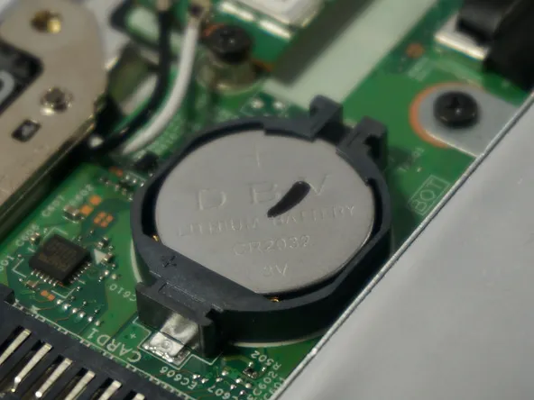

bateria pequena que fornece energia para a BIOS

A bateria CMOS é uma pequena bateria encontrada em placas-mãe de computador que fornece energia para a CMOS RAM, responsável por armazenar informações da BIOS, como data, hora e configurações do sistema. Ela é uma bateria tipo moeda e geralmente dura vários anos, mas pode precisar ser substituída se apresentar problemas.